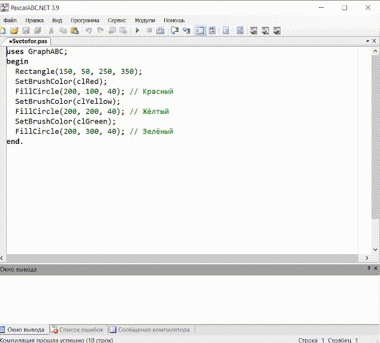
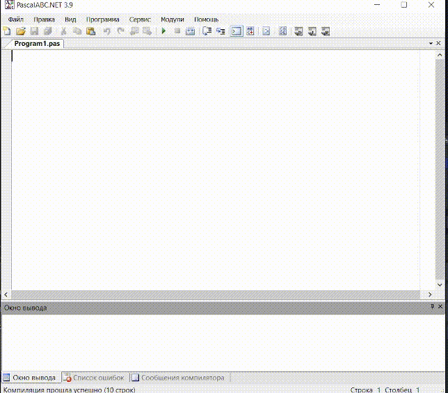
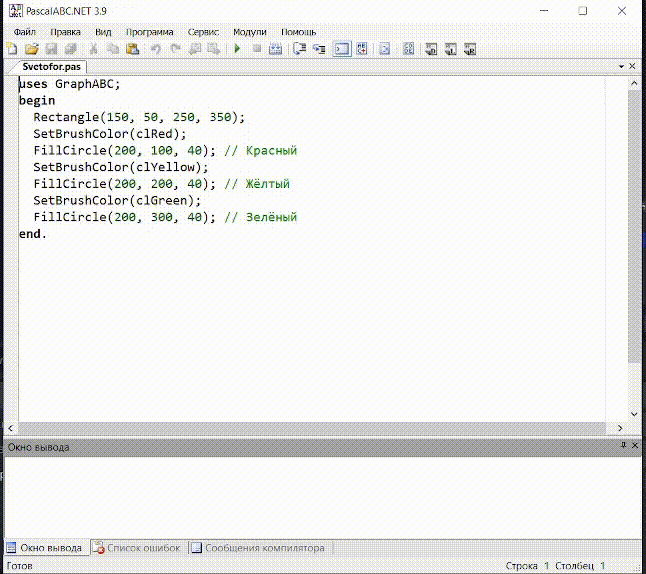
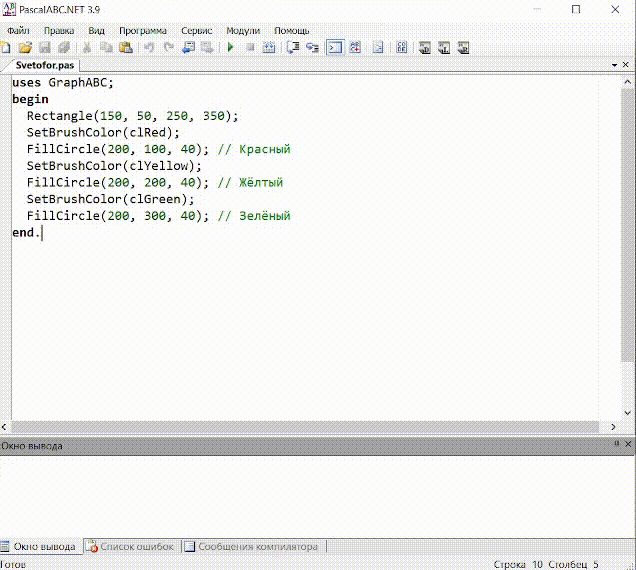

Среда программирования PascalABC.NET

Среда программирования — комплекс программ, используемых при разработке других программ.
Для разработки программ используются среды программирования (Интегрированные Среды Разработки - ИСР, англ. IDE, Integrated Development Environment).
При нажатии на иконку среды, открывается рабочая область которая включает в себя 3 раздела: панель
управления (сверху), область для написания кода, и область отладки (снизу).
В панели управления находятся разделы "Файл", "Правка", "Вид", "Программа", "Сервис" и "Помощь"
С помощью панели "Файл" можно сохранять и открывать файлы. При необходимости можно обратиться к
справочной системе через меню "Помощь"
Окно Справка содержит две вкладки: Содержание и Указатель. Информация отобразится в правом окне
В среду PascalABC.NET входят: редактор текстов; справочная система; исполнитель Чертежник и др.
Создать новый файл

Открыть файл

Запустить программу

Сохранение программы

Будет скоро
Будет скоро
Будет скоро
Будет скоро
Будет скоро